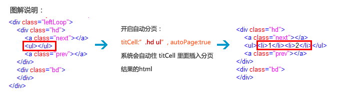

1.0版本带按钮的滚动效果（left、top）采用的是手动分页，这样做有一个缺点，就是当内容个数不确定的时候，可能会出现下面情况：
理想情况下：内容（图片）个数9，每次滚动3张，所以分页数是3
实际情况：客户只添加了6张图片，每次滚动3张，那么分页应该是2，此时就多出一页！
js调用：jQuery(".leftLoop").slide( { mainCell:".bd ul",effect:"leftLoop",vis:3,scroll:3,autoPlay:true} );
针对上述情况，1.2新增了autoPage让系统自动分页，兼容1.0，如果以前项目应用了SuperSlide，那么直接覆盖代码即可。
使用方法：需结合 titCell 使用，如果开启autoPage:true，此时titCell要指定为分页按钮的父层，因为系统会自动往titCell里面添加分页html！
例如：
手动分页调用为：jQuery(".leftLoop").slide( { titCell:".hd ul li", mainCell:".bd ul",effect:"leftLoop",vis:3,scroll:3,autoPlay:true} )
开启autoPage后：jQuery(".leftLoop").slide( { titCell:".hd ul", mainCell:".bd ul",effect:"leftLoop",vis:3,scroll:3,autoPlay:true,autoPage:true} )

正确调用结果如下：
js调用：jQuery("#autoPage").slide({ titCell:".hd ul", mainCell:".bd ul",effect:"left",vis:3,scroll:3,autoPlay:true,autoPage:true})